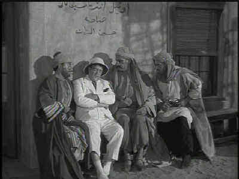

Image-Universal/1950/79m/FS 1.33/BW
Bud and Lou are two wrestling promoters who have to ship out to French Africa to bring their prize wrestler back to the fold. Before they can find him, an assortment a swarthy Arabs are chasing them through the Casbah and into the hands of the French Foreign Legion. Tricked by sleazy Walter Slezak into signing up for a five year Legion tour, the boys make a mockery of the training and discipline of the Foreign Legion. Thank God for the pretty girls on hand. Patricia Medina plays a French undercover agent seeking to discover who is giving vital information to Arab insurgents. The beautiful Medina has some stunning moments in harem garb and Lou gets to plant a buss or two on her creamy cheeks before the commandant of the Legion battalion plants a medal on Lou and plants a kiss or two on him.
 |
Lou snoozes while assassins look on. ©Universal |
This is one of the weaker black and white transfers of Abbott and Costello films I’ve watched. There are scratches and dirt markings on the transfer elements and the grain gets ugly at times. It appears that the DVD was made from an older tape source, probably composite, since there were cross-color artifacts that I noted. The desert scenes are the weakest and there are plenty of those. It appears that the source presented a challenge to successful compression or not enough time was allotted to the job. The mono sound is typical of the era. It’s clear without hiss, but there is some variation is output levels.